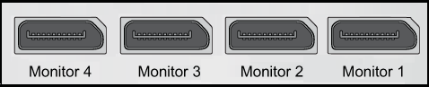
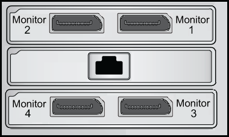
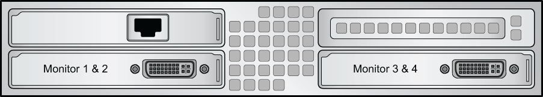

Video port setup for DeltaV multiple monitor workstations
This topic defines the recommended setup for an Emerson DeltaV 4 (quad) monitor (multiple monitor) workstation using the Dell T5810, R7910, or R5500-based computers. These platforms are currently supported as DeltaV multiple monitor (4-head or quad head) workstations.
R7910XL platform
The R7910XL quad-monitor workstation has one AMD FirePro W5100 graphic card with four DisplayPort (DP) outputs. If purchased directly from Emerson, the DeltaV Quad-Monitor Workstation package includes four DP-to-DVI adapters.
Early packages of R7910XL were shipped with four passive DP-to-DVI adapters. Using these adapters may cause an issue wherein only three monitors can be detected. As a workaround, at least one Visiontek active DP-to-DVI adapter (Manufacturer Part Number 900639, Dell Part Number A7102180) must be purchased and used on the fourth port. Newer R7910XLs are being shipped with four active DP-to-DVI adapters.

T5810 platform
The T5810 quad-monitor workstation has two AMD FirePro W2100 graphic cards. Each graphic card has two DisplayPort (DP) outputs. If purchased directly from Emerson, the DeltaV Quad-Monitor Workstation package includes four DP-to-DVI adapters.

R5500-based platform
The R5500-based platform comes with two ATI FirePro 2270 graphics cards installed. Each video card ships with a DS59 to dual DVI 'Y cable' assembly.
There are no direct-connect DVI or VGA outputs available on the ATI FirePro 2270.
The following image shows the recommended way of connecting quad head (4-head) monitors using a R5500 machine. The picture is of the R5500's back panel. Notice that there are two ports. As such, the R5500 systems with a quad monitor configuration have two (2) Y connectors that come with the package.
The Y connector labeled "1" is for monitor 2 or 4, while the connector labeled "2" is for monitor 1 or 3.
